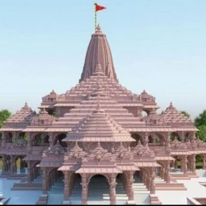

Ayodhya is a city situated on the banks of holy river Saryu in the Indian state of Uttar Pradesh. It is the administrative headquarters of Faizabad district and the Faizabad division of Uttar Pradesh, India. It shares a municipal corporation with its neighbouring twin city of Faizabad.
Ayodhya, also known as Saketa, is an ancient city of India, is the birthplace of Rama and setting of the great epic Ramayana. Ayodhya used to be the capital of the ancient Kosala Kingdom. It has an average elevation of 93 meters (305 feet). Owing to the belief as the birthplace of Rama, Ayodhya (Awadhpuri) has been regarded as first one of the seven most important pilgrimage sites (Mokshdayini Sapt Puris) for Hindus.The early Buddhist and Jain canonical texts mention that the religious leaders Gautama Buddha and Mahavira visited and lived in the city. The Jain texts also describe it as the birthplace of five tirthankaras namely, Rishabhanatha, Ajitanatha, Abhinandananatha, Sumatinath and Anantnath, and associate it with the legendary Bharata Chakravarti. From the Gupta period onwards, several sources mention Ayodhya and Saketa as the name of the same city.
Ancient Hindu Sanskrit-language epics, such as the Ramayana and the Mahabharata mention a legendary city called Ayodhya, which was the capital of the legendary Ikshvaku kings of Kosala, including Rama.[18] Neither these texts, nor the earlier Sanskrit texts such as the Vedas, mention a city called Saketa. Non-religious, non-legendary ancient Sanskrit texts, such as Panini's Ashtadhyayi and Patanjali's commentary on it, do mention Saketa.[18] The later Buddhist text Mahavastu describes Saketa as the seat of the Ikshvaku king Sujata, whose descendants established the Shakya capital Kapilavastu.[19]
The earliest of the Buddhist Pali-language texts and the Jain Prakrit-language texts mention a city called Saketa (Sageya or Saeya in Prakrit) as an important city of the Kosala mahajanapada.[20] Topographical indications in both Buddhist and Jain texts suggest that Saketa is the same as the present-day Ayodhya.[21] For example, according to the Samyutta Nikaya and the Vinaya Pitaka, Saketa was located at a distance of six yojanas from Shravasti. The Vinaya Pitaka mentions that a big river was located between the two cities, and the Sutta Nipata mentions Saketa as the first halting place on the southward road from Shravasti to Pratishthana.